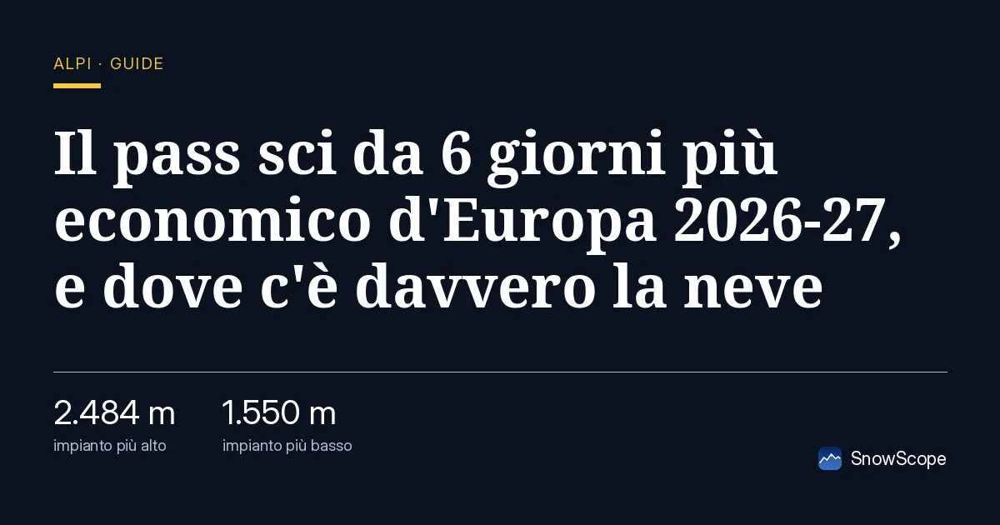
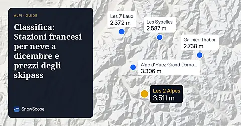

Il pass sci da 6 giorni più economico d'Europa 2026-27, e dove c'è davvero la neve
La settimana sugli sci più economica d'Europa quest'inverno non è in Slovenia, anche se la Slovenia ha alcuni dei prezzi più bassi. Les Karellis, nelle Alpi francesi, vende un pass adulto da 6 giorni a 191 EUR e, nella nostra storia della neve di 46 inverni passati, ha 19 settimane all'anno con almeno 50 cm di neve in 9 inverni su 10. I pass sloveni economici non ne hanno nessuna.
Le previsioni neve in tempo reale per Les Karellis nell'app SnowScopeAltezza neve, allerte powder e mappa 3D, gratis.
Le dieci settimane sugli sci più economiche che abbiamo controllato
Abbiamo preso i prezzi del pass adulto da 6 giorni pubblicati dalle stazioni per l'inverno 2026-27 e li abbiamo ordinati. Les Karellis è prima con 191 EUR, poi Krvavec a 205 EUR, Rogla da 210 EUR (fino a 237 EUR nelle date più richieste), il Pass Horizon di Orcières Merlette a 227 EUR, che apre anche piscina e pista di ghiaccio, e Vogel a 230 EUR.
Il secondo gruppo è molto compatto: Galtür a 258 EUR in bassa stagione, Livigno a 258,5 EUR durante la promozione dal 28 novembre al 18 dicembre 2026, Les 2 Alpes a 266,5 EUR, Kühtai a 269 EUR in bassa stagione e Valloire-Valmeinier a 278,5 EUR. Il distacco tra il primo e il decimo posto è più piccolo di quanto si pensi, quindi a decidere dovrebbe essere la neve.
Il prezzo è solo metà della storia: la verifica della neve
Un pass economico è conveniente solo se c'è neve su cui sciare. Per ogni stazione abbiamo guardato la quota intermedia nella nostra storia della neve e contato le settimane di un inverno tipo con almeno 50 cm di neve in 9 inverni su 10. Le chiamiamo settimane neve-sicura. Cinquanta centimetri sono più o meno quanto serve perché la maggior parte delle piste apra senza sassi.
Les Karellis ha 19 settimane neve-sicura a 2.017 m. Les 2 Alpes ne ha 20 a 2.397 m, Valloire-Valmeinier 19, Galtür e Kühtai 18 ciascuna, Orcières Merlette 16 e Livigno 13. Krvavec, Rogla e Vogel ne hanno 0: la loro quota intermedia è tra 1.151 m e 1.718 m e in un dicembre normale ha tra 6 e 10 cm di neve naturale. Possono comunque essere divertenti grazie all'innevamento programmato, ma si punta tutto sul meteo.
Il nostro verdetto per una settimana sugli sci low cost
Per una settimana economica con buone probabilità di neve, Les Karellis è il vincitore netto: prezzo più basso e 65 cm di neve in un dicembre tipo a quota intermedia, 110 cm in gennaio. È un'area piccola con 45 km di piste, quindi è più adatta a famiglie e sciatori intermedi che a chi vuole una valle nuova ogni giorno.
Se volete più terreno sciabile con un budget leggermente più alto, Les 2 Alpes offre 108 km di piste e gli impianti più alti della lista, fino a 3.511 m, per 266,5 EUR. Kühtai è la scelta austriaca: i suoi impianti partono da 1.939 m, quindi anche a valle di solito ci sono 61 cm in dicembre. Galtür è l'alternativa tranquilla nella valle del Paznaun.
Quando andare per pagare il prezzo basso
Molti di questi prezzi sono tariffe di bassa stagione. Galtür e Kühtai costano di più in alta stagione, e i 258,5 EUR di Livigno valgono solo fino al 18 dicembre 2026. La settimana dal 12 al 19 dicembre è il periodo ideale: i prezzi bassi sono ancora validi e le stazioni sopra i 2.000 m hanno di solito già un buon manto di base.
In gennaio la neve è più abbondante quasi ovunque nella lista. Se le date sono flessibili, una settimana di gennaio fuori dalle vacanze scolastiche offre il miglior equilibrio tra prezzo e neve, ma verificate quale tariffa si applica alle vostre date prima di prenotare.
Dove dormire spendendo meno
Il pass è solo una parte del conto. Stazioni piccole come Les Karellis e Orcières Merlette hanno molti appartamenti vicini agli impianti, il che mantiene economica la settimana per una famiglia. A Galtür e Kühtai, le pensioni spesso costano meno degli hotel. La mappa in questo articolo mostra soggiorni sotto i 120 EUR a notte per la settimana dal 12 al 19 dicembre, vicino alle stazioni che consigliamo.
Controllate sempre il sito ufficiale della stazione prima di acquistare: i prezzi possono cambiare durante l'inverno e le tariffe più basse sono spesso disponibili solo online.
Consigli per sciatori
- Miglior rapporto qualità-prezzo per una settimana sugli sci: Les Karellis, 191 EUR per 6 giorni e 19 settimane neve-sicura.
- Più terreno sciabile: Les 2 Alpes, 266,5 EUR per 6 giorni e impianti fino a 3.511 m.
- I pass sloveni sono economici ma a quota bassa: pianificateli solo dopo una buona nevicata.
- Acquistate sul sito ufficiale della stazione e controllate il bollettino valanghe prima di uscire dalle piste battute.
Altre mappe (siti esterni)
Riferimenti e crediti
- Les Karellis, official prices 2026-2027 www.leskarellis.com/fr/tarifs-2026-2027-sans-lien
- Krvavec: official lift-pass prices (2026-27), checked 13 November 2026 rtc-krvavec.si/cenik-urnik
- Rogla: official lift-pass prices (2026-27), checked 13 November 2026 www.rogla.eu/sl/aktualna-ponudba/ceniki/zimske-aktivnosti/cenik-smucarskih-vozovnic-v-sezoni-20262027/
- Orcières, official ticketing, winter 2026-27 pass.orcieres.com/en/ticketing
- Vogel: official lift-pass prices (2026-27), checked 13 November 2026 vogel.si/cenik-zima/
- Galtür: official lift-pass prices (2026-27), checked 13 November 2026 www.galtuer.com/en/winter/operating-times-prices/skipass-prices-silvapark
- Livigno, official ski pass price list 2026-27 (PDF) www.livigno.eu/hubfs/tariffe_26-27.pdf
- Les 2 Alpes, official ski pass shop, prices 2026-27 www.skipass-2alpes.com/en/pricing
- Kühtai: official lift-pass prices (2026-27), checked 13 November 2026 www.kuehtai.info/service/service/preise-wintersaison-2026-2027.html
- Valloire, official ski pass shop (Galibier-Thabor), winter 2026-27 skipass.valloire.com/fr/
Su questi numeri
Numeri della neve: storico neve SnowScope, 46 inverni passati (1980-81 - 2025-26) a tre quote della località (una stima per un'area, non i bollettini della località). Impianti, piste e accesso: le fonti qui sotto, verificate alla data indicata.
Cita questo articolo
Per ricerca, didattica o stampa: numeri e grafici sono liberamente riutilizzabili con licenza CC BY 4.0 citando così.
SnowScope (2026), Il pass sci da 6 giorni più economico d'Europa 2026-27, e dove c'è davvero la neve, https://snowscope.app/blog/it/2026/11/cheapest-6-day-ski-pass-europe-2026-27-snow-check.html, consultato il 2026-11-19
SnowScope (Atlas Labs). (2026, November 19). Il pass sci da 6 giorni più economico d'Europa 2026-27, e dove c'è davvero la neve. SnowScope snow reports. https://snowscope.app/blog/it/2026/11/cheapest-6-day-ski-pass-europe-2026-27-snow-check.html
BibTeX
@misc{snowscope2026cheapest6dayskipasseurop,
author = {{SnowScope (Atlas Labs)}},
title = {Il pass sci da 6 giorni più economico d'Europa 2026-27, e dove c'è davvero la neve},
year = {2026},
month = nov,
howpublished = {\url{https://snowscope.app/blog/it/2026/11/cheapest-6-day-ski-pass-europe-2026-27-snow-check.html}},
note = {Published 2026-11-19 13:06 UTC; accessed 2026-11-19}
}· CC BY 4.0 · Metodi, dati e strumenti →
Les Karellis: neve e temperatura per quota, quest'inverno vs lo scorso (strumenti) →
Segui Les Karellis
Gratis: un messaggio quando arriva la neve e il meteo ogni mattina.
Altri bollettini neve

Les Karellis offre 45 km di piste e uno skipass adulto di 6 giorni a 191,00 EUR con una probabilità del 98 % di neve a metà montagna a fine dicembre.

Classifichiamo le stazioni sciistiche francesi in base alle probabilità di neve a dicembre e ai prezzi dei pass, partendo da 36,00 EUR per un pass giornaliero adulto a Les Karellis.

Da 20 EUR per un weekend di apertura a skipass da 6 giorni prima di Natale: un calendario delle offerte sci più economiche di inizio stagione nelle Alpi per il 2026, con la neve che puoi aspettarti.